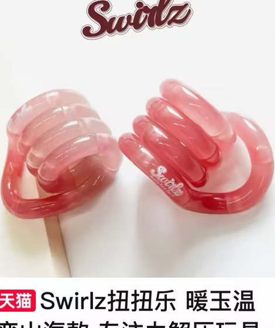
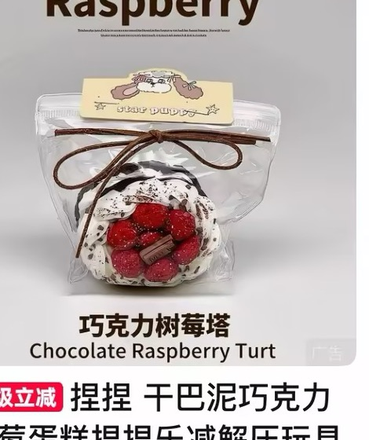
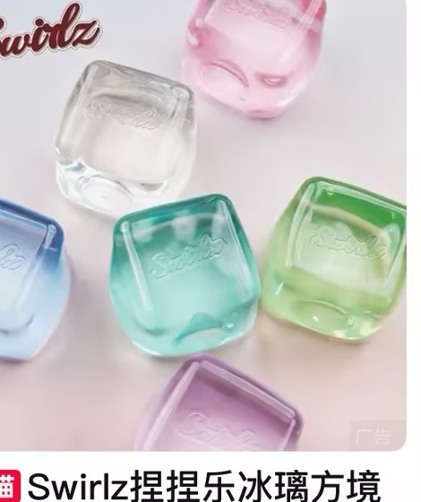
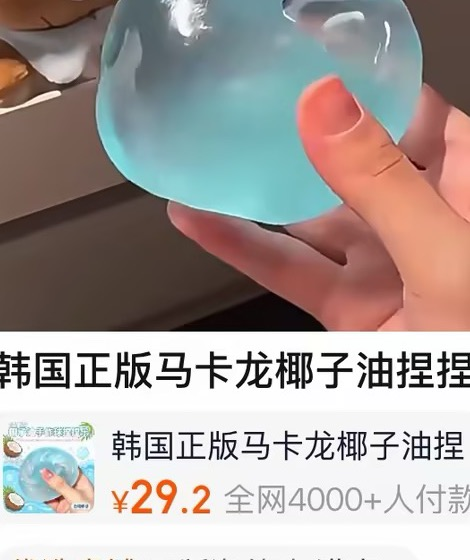
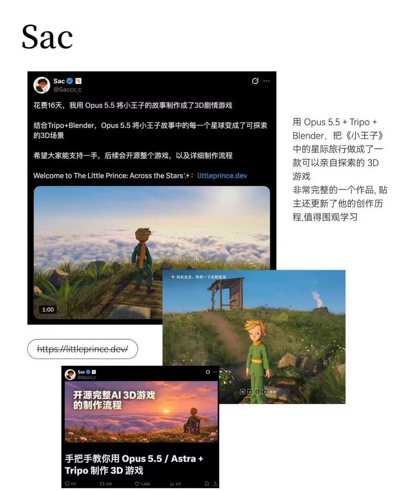
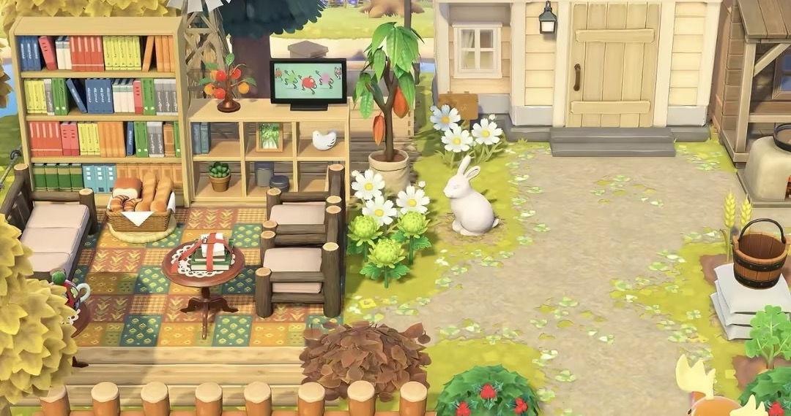

一枚握在手里的蛋，用七天时间读出你的握持与节律，由生成模型据此长出一只宠物。它先住在手机里的一座小岛上，之后可以被打印成实体，寄到你家里。
问题不在于压力本身，而在于压力缺少可以停留的地方。
解压玩具提供了一个真实的握持物，但捏过之后什么也不会留下；情绪应用记录了很多，却要求人先学会描述自己。对一个已经疲惫的人来说，描述自己比承受本身更费力。[1] 于是在"握了但没有记录"与"记录了但不再握"之间，出现了一个空位：既保留真实手感，又不向使用者索取语言。长期得不到释放的职业性耗竭已是普遍现象，而非个别案例。[9]
市场上的解压产品正在快速扩张。电商平台上的慢回弹捏捏类目已经形成从几元到四十元的完整价格带，头部单品销量以万件计。[2] 这些产品验证了握持需求的存在，也暴露了它们共同的天花板：手感是一次性的，用完之后，人与物之间没有积累出任何东西。




电商平台在售的解压品类（2026 年 11 月截图）。它们的共同点是：只提供手感，不产生记忆。
本设计不做情绪识别，也不做心理评估。它只处理一件事：让一段本来无处安放的时间，有一个具体的落点。
一个具体的人，在具体的几分钟里，需要的东西其实很少。
| 人群 | 所处处境 | 常见的一天 |
|---|---|---|
| 在校高年级学生 | 考研、实习、秋招叠在一起，压力集中且无处可说 | 白天在图书馆，晚上回宿舍，情绪在关灯后最明显 |
| 工作一到五年的年轻人 | 一线与新一线，加班、通勤、述职轮番出现 | 会议之间十分钟、地铁四十分钟、睡前十分钟 |
| 刚毕业、刚换岗的人 | 既没有同学圈也没有同事圈，是最难开口求助的一段 | 独自吃饭，独自回家，社交账单降到最低 |
从一次握持到一只可以被寄出的宠物，中间经过六层。
六层各自可以独立验证，但只有串起来才成立。信号层只负责把动作变成数据；状态层把当次数据压成四个可用的判断；画像层把单次放进周与月的尺度，形成对一个人的描述；生成层把描述翻译成形态；空间层给这只宠物一个每天生活的地方；物质层则让它可以离开屏幕。
选择蛋形，是为了让它在被拿起时不发出任何要求。
蛋形没有正面，也没有朝向。把它放在桌上，它不朝向任何人；把它握在手里，它的曲面与掌心自然贴合。这两点决定了它不会被当成一个需要操作的设备。球体同样满足前一条，但球体会滚动，需要一个额外的托；蛋不会，它停在哪里就是哪里。蛋形没有表情，也就不会被误读，这符合人对低线索对象的天然偏好。[4]
高 78mm，最大直径 58mm，恰好落在成年人单手掌心包覆的区间内。外壳用哑光釉，避免指纹堆积；上半部覆一层 1.6mm 的硅胶，提供握持时的摩擦与轻微回弹。重心下移 12mm，放回桌上时不会倒。
外壳与内胆之间留 2mm 空腔，用于走线与缓冲。内胆里是压力膜阵列、六轴模块与一枚小尺寸振动马达，底部为磁吸充电触点，整机没有按键。反馈只走两条通道：一条是微振，一条是内壁的暖光，两者都在握持时才出现。反馈是身体的，不是符号的。[6]
每天只做一件小事。七天之后，蛋壳裂开，出来的是这七天里你的样子。
孵化不做任务清单，也不设积分。每天的手部行为都会被记录，但用户看不到任何数字。蛋只在两种时刻回应：被握住超过二十秒时，内壁亮一次；被放下超过四小时没有再次被拿起时，轻微振动一次。第七天结束时，蛋会在用户不在场的时候裂开。
| 阶段 | 蛋在做什么 | 记录什么 | 宠物在长什么 |
|---|---|---|---|
| D1 沉默 | 只记录，不反馈，亮度为零 | 握持时长、施力峰值 | 还没有形象 |
| D2 基线 | 开始建立个体区间 | 揉搓频率、放置间隔 | 内部参数确立 |
| D3 回应 | 首次亮起，持续一秒 | 一天中的时段分布 | 轮廓开始出现 |
| D4 中断 | 若未使用，不补偿、不催促 | 缺勤本身作为信号 | 形态收窄一档 |
| D5 加速 | 振动一次，间隔拉长 | 恢复速度 | 表面质感确定 |
| D6 收拢 | 停止记录，进入静默 | 全周期汇总 | 生成六个候选 |
| D7 裂开 | 外壳沿分模线裂开 | 不再采集 | 择一，出现在岛上 |
用户能看到六个候选，但只能接受其中被指定的那一个。
把六天的数据翻译成形象，需要一个中间层：六个可调的形态参数。参数不是随机抽取的，每一个都由一类信号决定。模型（以 Claude Opus 系列为代表的多模态生成模型）在参数约束下输出六个候选形象，系统依据信号的确定性择一，其余五个不展示给用户，只在后台留档。同样的生成管线在社区已有完整先例。[4]
| 形态参数 | 由什么决定 | 为什么是它 |
|---|---|---|
| 体型 | 七日的总握持时长 | 握得越久，体型越圆。圆意味着更少的边缘，也就是更少的攻击性。 |
| 表面 | 揉搓的频率与幅度 | 高频小幅生成细密颗粒，低频大幅生成块面。手感被翻译成视觉质感。 |
| 色彩 | 使用时段 | 深夜为主偏冷灰，清晨为主偏暖砂。颜色记录的是时间，不是情绪。 |
| 五官 | 首次回应的反应速度 | 回应越快，眼睛越大。它保留的是人与它第一次对视时的距离。 |
| 动作节奏 | 放置间隔的分布 | 间隔均匀则动作舒缓，间隔破碎则动作短促。 |
| 一件附属物 | 中断的天数 | 缺勤一天生成一道裂纹，缺勤两天生成一处缺角。裂痕被保留，不被修复。 |

不让用户挑选外形，是本设计与市面上所有宠物养成产品的分界。一旦可以选择，宠物就退回到商品的位置，而商品不会因为七天而变得特殊。稀缺本身会改变一段关系的价值判断。[8]把选择权交出去，换来的是一件无法被比较、也无法被替换的东西。
参考《集合啦！动物森友会》的空间感，去掉它的经济系统。

岛是宠物生活的地方，也是用户每天愿意打开一次的理由。动森的可借鉴之处在于它的空间尺度与节奏：地图小、移动慢、没有任务倒计时。不可借鉴之处在于它的经济系统，摘果子、卖大头菜、还房贷，这套循环把放松重新变成了工作。本设计的岛没有货币、没有等级、没有排行榜，也没有可交易的道具。
数字关系需要一个可以被放在桌上的终点。体验经济的落点从来都是可留存的实物记忆。[8]
孵化完成后的第三十天，用户会收到一次打印邀请。把岛上那只宠物做成实体，材料为光敏树脂或陶土，尺寸控制在 60mm 以内，底座刻一枚编号与孵化日期。打印由系统自动排产，用户只决定要不要，不决定颜色与姿态。姿态取自这一个月里它最常出现的那一个动作。
这一层不只是周边的售卖，它承担一个设计上的收尾：屏幕里的东西会随着应用停止更新而消失，桌上的东西不会。一件被寄到手里的物件，把这段关系从服务里取了出来，交还给物本身。
从拆箱到收到实体，前后四十天。
| 时间 | 用户 | 系统 |
|---|---|---|
| 第 0 天 | 拆箱，把蛋放在桌上或包里 | 配对完成，不要求注册完整资料 |
| 第 1 至 6 天 | 想捏就捏，不想就不碰 | 静默记录，只在两次时刻给出回应 |
| 第 7 天 | 下一次拿起时发现壳裂了 | 展示形象，引导进入岛屿 |
| 第 8 至 30 天 | 每天打开一次，看它在做什么 | 每日十二分钟上限，超时起雾 |
| 第 30 天 | 收到打印邀请，选择要或不要 | 排产、打印、编号、寄出 |
| 之后 | 实体在桌上，应用可以停用 | 停止采集，保留只读档案 |
不做疗效声称，只检验三件可以被测量的事。
| 假设 | 方法 | 指标 |
|---|---|---|
| 身体输入可以替代自述 | 同一批被试先填写情绪日记三天，再用蛋三天，比较完成率与耗时 | 日均使用次数、首次使用到放弃的间隔 |
| 七天足以形成依恋 | 十二名被试，七日孵化，前后测对照 | PANAS 正负情感、UCLA 孤独量表、是否主动命名 |
| 形象与体验相关 | 孵化后请被试描述宠物，与后台参数做对照 | 描述与参数的一致项数量、主观吻合度评分 |
样本十二人，年龄 22 至 32 岁，覆盖在校与在职两类。前测在孵化前一天完成，后测在第七天与第三十天各一次。访谈采用半结构，重点问三个问题：这七天里你有没有想过它；你怎么向别人介绍它；如果明天它消失了，你会做什么。
这条线必须写在产品里，而不只写在论文里。